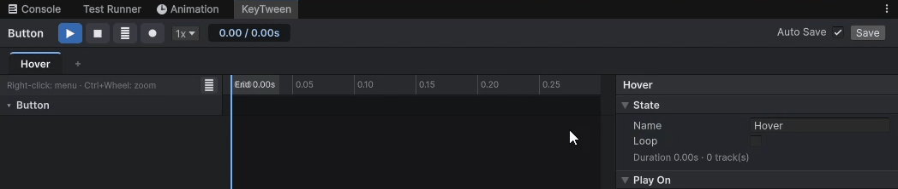

States
A state is one named animation. You create a state for each situation, such as Hover, Open or Close, and play it from code or through Play On.
Adding a State
- Click + in the state tabs. States are named
State,State 1, and so on. - Select the new state's tab.
The timeline is empty and the state inspector appears.
Working with State Tabs
| To | Do this |
|---|---|
| Rename | Double-click the tab, type the new name and press Enter. Esc cancels |
| Duplicate | Right-click the tab › Duplicate. The copy appears right after it as Name Copy and opens |
| Reorder | Drag the tab sideways and drop it. Right-click › Move Left / Move Right also works |
| Delete | Right-click the tab › Delete (after you confirm) |
- You can also rename with right-click › Rename or Name in the state inspector. Play On links follow a new name.
- An empty name, or a name another state already uses, is not accepted, because code and Play On find states by name.
- A duplicated state does not get a copy of Play On: one event plays one state.

State Inspector
When no track or key is selected, the inspector shows the state's settings.
| Item | Contents |
|---|---|
| Name | The state's name. Play On links follow a new name |
| Loop | When playback reaches the end, it continues seamlessly from 0 s and repeats |
| Duration | The state's length and track count (for example, Duration 0.80s · 3 track(s)) |
| Play On | None or an event |
| Callbacks | Functions to call when a play starts (On Start), reaches its end (On Complete), or does not reach its end (On Cancel) |
| Delete State | Deletes the state after you confirm |
- Loop is the same idea as Loop Time on an Animator clip. Events, sounds and child calls fire again on every loop.
- Choosing an event in Play On adds a
KeyTweenTriggercomponent automatically.
For the available events, see Play On.
Calling Functions at the Start and End (Callbacks)
In Callbacks in the state settings, connect functions to call when a play starts and ends. It works like a Button's OnClick: drag in an object and choose a function. Each state has its own.
| Field | When it is called |
|---|---|
| On Start | When a play starts (any play method: Play, PlayAsync, PlayReversed, With(...).Play and so on). After the first pose, before the animation events at the start time |
| On Complete | When the play reaches its end, or Complete skips there. After the animation events at the end, before PlayAsync completes |
| On Cancel | When the play does not reach its end: Stop, another state took everything it animates, the object was disabled, the same state was played again, or the PlayAsync token was canceled |
- Each play starts with On Start and ends with exactly one of On Complete and On Cancel.
- A looping state calls On Start once at the beginning, and On Complete only when you call
Complete. Stop(state, time), which writes a pose without playing, calls no callbacks. Stopping a playing state with it calls On Cancel.- The preview in this window does not call callbacks, so that no game code runs while you preview.
- Callbacks are saved in the prefab, and a prefab instance can override them like any other Unity value.
- In code, the
StateStarted,StateCompletedandStateCanceledevents report every state in one place. For details, see API.
State Length
A state's length is set by whatever ends last. The latest of the following is the state's length:
- The last key of a track
- An event
- The end of a sound
- The end of a child call